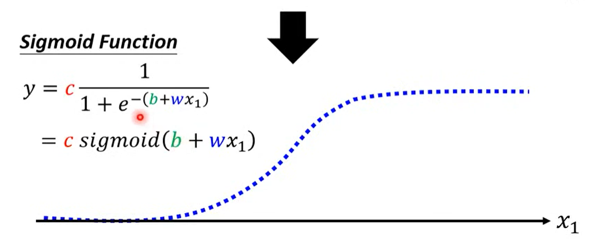
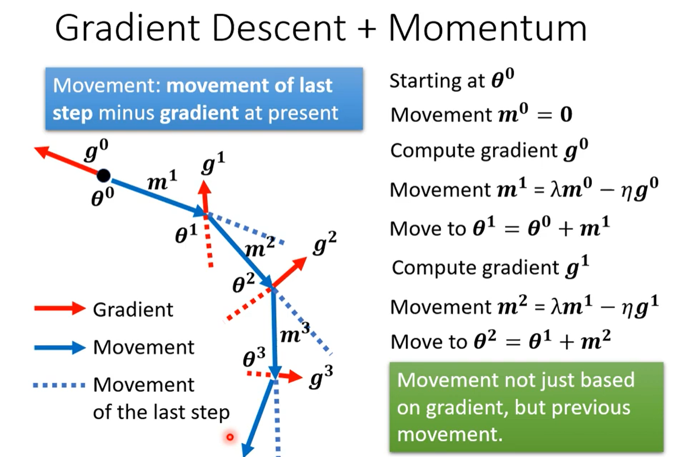

人工智能学习
Sigmoid Function
pytorch训练代码示例
训练：
1 | # 循环执行每个 epoch，进行多次训练迭代 |
评估：
1 | # 将模型设置为评估模式 |
预测：
1 | # 将模型设置为评估模式 |
NN
W1 ， X， b1都表示列向量
前向传播与反向传播
反向传播算法就是神经网络中加速计算参数梯度值的算法
分类与回归比较
在神经网络中，无论是用于分类还是回归，许多基本的组件和原则是相同的。然而，在一些细节上，分类问题和回归问题可能会有一些不同之处。以下是一些可能在分类问题中与回归问题有所不同的方面：
- 输出层激活函数： 在分类问题中，输出层通常会使用适当的激活函数，例如Sigmoid或Softmax，以确保输出在0到1之间，且可以解释为概率或类别概率分布。而在回归问题中，输出层可能不需要激活函数，直接输出数值。
- 损失函数： 分类问题通常使用交叉熵损失（Cross-Entropy Loss）作为损失函数（pytorch中，使用crossentropy会自动在最后一层添加softmax，而不需要手动再去添加），用于衡量模型输出的类别概率与实际标签之间的差异。而回归问题可能会使用均方误差（Mean Squared Error）等损失函数。
- 评价指标： 在分类问题中，评价指标通常包括准确率、精确率、召回率、F1分数等，用于衡量模型在不同类别上的性能。在回归问题中，常用的评价指标包括均方根误差（RMSE）、平均绝对误差（MAE）等。
- 标签表示： 在分类问题中，标签通常是离散的类别标识，例如0、1、2等。而在回归问题中，标签通常是连续的数值。
- 数据平衡： 分类问题中可能存在类别不平衡的情况，即某些类别的样本数量远多于其他类别。这可能需要在训练过程中采取一些方法来处理不平衡的数据分布。
尽管存在一些差异，但许多神经网络的核心概念和训练流程仍然是相似的。无论是分类问题还是回归问题，都需要进行数据预处理、构建模型架构、定义损失函数、选择优化器等步骤。因此，你可以在掌握了基本的神经网络知识后，根据问题的特点适当地进行调整和应用。
多分类
损失函数的选择
选择适当的损失函数取决于你的任务类型和问题特点。不同的任务可能需要不同的损失函数来衡量模型预测与真实标签之间的差异。以下是一些常见的任务和对应的损失函数选择：
- 回归任务：
- 均方误差（Mean Squared Error，MSE）：用于衡量连续数值预测的平均差异。
- 平均绝对误差（Mean Absolute Error，MAE）：类似于MSE，但是是绝对值的平均差异。
- Huber损失：平衡了MSE和MAE，对于异常值更具鲁棒性。
- 分类任务：
- 交叉熵损失（Cross-Entropy Loss）：适用于多分类和二分类问题，可以测量模型输出分布与真实标签分布之间的差异。
- Hinge损失：适用于支持向量机（SVM）和二分类问题，对错误分类的惩罚更大。
- Focal损失：处理类别不平衡问题，通过调整样本权重来降低容易分类的样本的影响。
- 生成模型任务：
- 对抗性损失（Adversarial Loss）：用于生成对抗网络（GANs），使生成器和判别器之间的平衡。
- KL散度损失（KL Divergence Loss）：适用于变分自编码器（VAEs），用于学习潜在空间分布。
- 序列任务：
- 负对数似然损失（Negative Log-Likelihood Loss，NLL）：适用于序列生成任务，如语言模型。
选择损失函数时，需要考虑任务的特点，例如输出类型（连续数值、分类类别等）、数据分布、模型性能的关注点（偏向哪个错误类型）、样本不平衡等。在实践中，你可以尝试不同的损失函数，并通过验证集的性能来确定哪个损失函数最适合你的任务。
逻辑回归的局限性破局
第一层全连接作为特征转换，第二层对转换好的特征进行分类
特征转换是一种在解决逻辑回归的局限性方面常用的策略之一。通过对原始特征进行变换或组合，可以使逻辑回归模型更好地适应非线性关系和复杂数据分布。特征转换的方法包括多项式特征、交互特征、指数变换等。
特征转换的作用是将原始特征空间映射到一个更适合线性模型的新特征空间，从而扩展逻辑回归的表达能力。这可以通过以下方式解决逻辑回归的一些局限性：
- 非线性问题： 通过引入多项式特征或其他非线性变换，可以让逻辑回归模型学习非线性关系。
- 高维特征： 特征转换可以将高维特征投影到低维特征空间，从而减少维度的影响，提高模型的泛化能力。
- 特征相关性： 特征转换可以帮助减少特征之间的相关性，提高模型的稳定性。
- 非均衡数据： 特征转换可以使不平衡数据更均衡，从而改善模型在少数类别上的性能。
需要注意的是，特征转换也可能引入一些新的问题，如维度灾难（curse of dimensionality）和过拟合。因此，在进行特征转换时需要谨慎选择合适的方法，并结合交叉验证等技术来评估模型的性能和泛化能力。特征转换通常是数据预处理的一部分，可以帮助提升逻辑回归模型的性能，但并不总是能够完全克服逻辑回归的所有局限性。
实验结果原因
带用动量的梯度下降
自适应学习率算法
卷积神经网络
就是通过训练找最好的卷积核和bias
卷积神经网络（Convolutional Neural Network，CNN）的核心思想之一是学习最优的卷积核（也称为滤波器），而不是手动设计它们。CNN的层级结构包括多个卷积层和池化层，其中每个卷积层都包含多个卷积核。
CNN通过反向传播和梯度下降等优化算法，自动地学习卷积核的权重，以最大程度地提取输入图像中的特征。这些特征可以是边缘、纹理、形状等，这些特征对于图像分类和识别等任务非常重要。
所以，CNN不仅仅是找到最好的卷积核，而且还是学习适应任务的卷积核。这种自动化的特征学习是CNN在计算机视觉任务中取得成功的重要原因之一，因为它减少了手动特征工程的需求，使模型更具通用性和可适应性。
最大池化效果好于平均池化
上图7层神经网络
每个卷积层后面基本都搭配一个ReLu，然后一般隔几层池化一次（非必须，alphago没有池化操作）
FC：全连接层。卷积只是提取特征，最终分类还是要靠全连接层
FC层与前面的层之后还有一个把特征图拉长成特征向量的过程。即 展平特征图
RNN
LSTM可以解决RNN训练梯度消失的情况